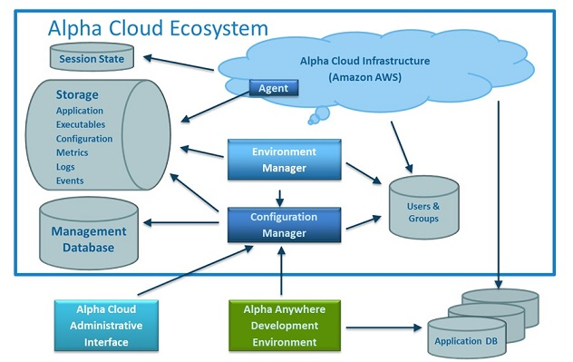
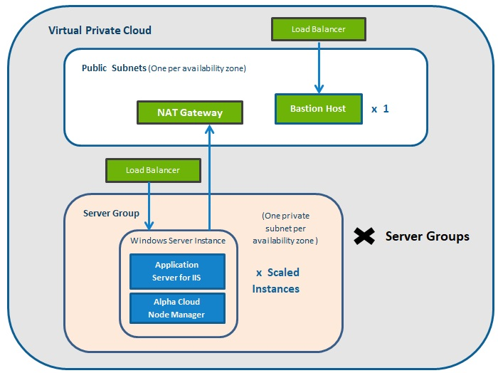
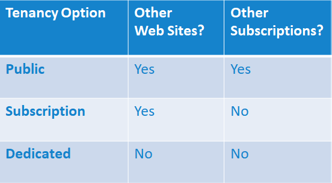

Overview
Who Is Responsible For Security?
Security Principles and Concepts
Alpha Cloud Architecture
How Alpha Cloud uses Amazon AWS
What are Server Groups?
How Secure Is This?
Web Site Tenancy
Securing Your Subscription
Securing Your Application
Alpha Cloud is a deployment environment for web and mobile applications built with Alpha Anywhere. Deployment is easy with reasonable defaults, but you are also in control of a rich set of options.
In this article, we will look at some general concepts related to securing a web site and discuss how the environment isolates your subscription resources and your running application from the internet and from other applications running on Alpha Cloud. We will also discuss programming practices you will want to follow in order to prevent potential exploits.
The short, and perhaps obvious answer, is that we all are.
Because Alpha Cloud is built on the Amazon AWS infrastructure and because Alpha Anywhere Application Server for IIS runs on Microsoft Windows Server, we automatically get a certain level of isolation from other tenants of Alpha Cloud and of of the Amazon ecosystem in general. Both Microsoft and Amazon invest significant effort in hardening the software and Amazon adds monitoring of the environment and traffic from the internet. As you will see, Alpha Cloud is implemented using best practices for both Amazon AWS and Microsoft Windows Server.
A secure infrastruction, however, does not mean that your web site is automatically protected from attacks from malicious web clients. Errors in logic and poor programming practice can create opportunities for malicious actors to attack your site and your database. The responsibility is shared by Amazon, Microsoft, Alpha Software and you!
The bad guys don’t stop trying new things. As new exploits are discovered and addressed, we all need to be proactive in making sure we adopt new practices in a changing world.
A secure system is expected to maintain:
In order to meet those objectives we must do the following:
A well secured system is useful and adds value to the organization using it while implementing authentication, authorization, encryption and auditing to prevent those who do not have permission from doing things they are not allowed to, and from seeing things they shouldn't see, all while keeping track of actions that are taken.
In order to make clearer how the architecture of Alpha Cloud facilitates secure deployment, we need to get some context. What is Alpha Cloud exactly?
Most of Alpha Cloud is not about running your application. Instead, most of the services associated with Alpha Cloud center around:
The diagram below shows the major components of the Alpha Cloud ecosystem. Most of the Alpha Cloud software has no direct access to the Amazon AWS infrastructure. The Alpha Cloud control plane (the part that creates and maintains the infrastructure and defines deployments) does not have access to any server on Alpha Cloud. Every change in Amazon AWS configuration is accomplished through Amazon AWS APIs that change the Amazon configuration indirectly.
This loose coupling between Alpha Cloud and the running servers improves performance, but also keeps Alpha Cloud software away from your running application. The agent software running on each server is responsible for keeping the local server consistent with the declared definition managed by Alpha Cloud. Every change in application configuration is communicated to running servers through a configuration file maintained by the control plane and read by the agent software on the running server.
We will look at the Amazon AWS configuration in the next section.

When you publish your web project to Alpha Cloud, all of the components and scripts in your web project are copied to storage on Alpha Cloud. The items to be published to Alpha Cloud are encrypted locally using a key provided by the control plane before being copied to temporary storage on Alpha Cloud. The uploaded assets are then reencrypted using a private key before being stored permanently on Alpha Cloud. Alpha Cloud uses Amazon AWS S3 - Simple Storage Service as a repository for application resources. Each time you publish to Alpha Cloud, a new version of your web project is created. Previously published versions of your application are kept in case they are needed.
Deployments on Alpha Cloud occur when you assign a version of your published application to a web site and select a specific build of Alpha Anywhere Application Server for IIS to run with that application. Alpha Cloud manages the process by assigning your web site to a server group, creating a deployment package and updating the configuration file for that server group to let the servers in that group know that they should run the web site.
Each server in a server group is responsible for installing the deployment package, the correct build of Alpha Anywhere Application Server for IIS, and any certificates required for the web site. A piece of software (called an Agent) creates the Microsoft IIS (Internet Information Services) resources required to run your application. That same service encrypts and pushes logs for your application to secure storage so you can view them through the Alpha Cloud dialogs in Alpha Anywhere. Additional software installed with Alpha Anywhere Application Server for IIS tracks and reports usage for your application. The usage information is is also available in the Alpha Cloud dialogs in Alpha Anywhere.
When we say that Alpha Cloud is built on Amazon AWS and runs Microsoft Windows Server, we mean that Alpha Cloud automates the tasks that your would have to perform your self to configure an on-premises environment using Alpha Anywhere Application Server for IIS. The deployed application runs the same Alpha Anywhere Application Server for IIS that you can license and run yourself.
If you choose to, you can license the Alpha Anywhere Application Server for IIS and create an environment comparable to Alpha Cloud by subscribing to Amazon AWS and building the same infrastructure we do. In addition to the infrastructure, Alpha Cloud provides automation for the many tasks you would have to complete to create a configuration to run your application securely and robustly at scale.
Amazon has a number of services that can be assembled to build a robust and highly scaleable application deployment.
Notes:

An Alpha Cloud Server Group is a collection of one or more identical Windows Server virtual machine instances running behind a load balancer. At runtime, a deployment is assigned to a web site and that web site is assigned to a server group. A server group definition is mapped to one or more Amazon AWS auto-scaling groups using all of the services described above.
Note: The default behavior for every web site you deploy on Alpha Cloud is that there are at least two server instances running in multiple data centers behind a load balancer. We use up to three availability zones depending on how many are available in a region.
Let's look at the components that make up the environment for a running web site.
Amazon creates an isolated network using the following:
Each server instance runs Microsoft Windows Server (currently at version 2016).
In order to keep current with security patches to Windows Server, server groups are updated automatically whenever Amazon issues an updated machine image (AMI) of Windows Server. Alpha Cloud's control plane watches for these updates reconfigures the auto-scaling group to create new servers using these new versions. This process rotates out instances by creating new servers using the Amazon API and then deleting old servers once the new ones are available. This way, your application is never out of service.
The default Windows Server 2016 environment includes some ciphers, hashes and protocols that are considered insecure. At startup, the Alpha Cloud configuration removes the insecure ones to assure that deployed applications get the best rating for security. For more information on how Alpha Cloud gets an A+ rating on TLS security, see Alpha Cloud Security Capabilities.
Alpha Anywhere Application Server for IIS runs under Microsoft Internet Information Services (IIS) and the web sites configured in IIS with tight security as follows:
The key practice applied to deployment on a Windows Server in Alpha Cloud is referred to as the "principle of least privilege". Your web site is deployed with only enough permission to run an IIS process, to read from your deployed components and other files, write logs, and manage temporary files. There are even quotas set on how much disk space your application can use.
For security reasons, you do not have access to any server your application is running on. Even if you could, an application is running at scale with multiple servers and requests may be routed to different servers, for the same web session; so you would have to manage multiple servers.
By default, a web site is assigned to a server group that includes web sites from multiple subscribers to Alpha Cloud. The Alpha Cloud control plane assigns web sites to server groups based on the resources already committed to a server group. In general, once a web site is assigned to a server group, it does not move to another group; that is unless the web site is disabled and then reenabled and the control plane chooses a different group. The security practices discussed above, make this a reasonable choice for applications in that they are already properly isolated from each other.
The default web site assignment in Alpha Cloud is referred to as Public tenancy. There are three types of tenancy in Alpha Cloud and they differ primarily in the way a web site is assigned to a server group.
Here is a summary of the options available for tenancy assigned to a web site:

Public tenancy is sufficient to isolate your application from other applications. Subscription and Dedicated tenancy are generally not needed, but are offered for cases where you want (or are required to have) more control over the deployment environment. This feature comes at a cost, because Alpha Cloud is not able to use server instances for other subscribers and we must pay to keep them running whether you use them or not. For this reason, you are charged an additional fee to cover the cost of keeping a, potentially, unused server running. This charge is based on the minimum number of instances you schedule and is charged by the hour.
Note: For more information on tenancy in Alpha Cloud see Tenancy in Alpha Cloud
In order to protect your subscription, Alpha Cloud retricts access to your definitions and files based on user names and passwords assigned by e-mail address. Anyone can create a user account on Alpha Cloud, but only by either purchasing a subscription, or being authorized as a maintainer can anyone make changes to your applications and deployments and other assets.
In order to keep your data private and secure, in keeping with the principles discussed above:
Data at Rest
Data In Transit
Programming Practices
Secure Deployment
Alpha Cloud automatically encrypts objects stored in S3.
When you store objects outside of Alpha Cloud, make sure you are taking advantage of encryption facilities.
Amazon S3, for example supports a number of approaches to security buckets by default:
Encrypt data in your database
If you are using Amazon RDS, you already have options to encrypt your database:
When data is moving between a client device and a server or between the server and another service:
When data is moving between your server and your database:
Security is hard and it requires an ongoing effort to protect your resources and those of your customers.
Unfortunately, there is much more to securing your application than we could possibly cover in a single article. You should now have a basic understanding of the lengths Alpha Software has gone to make sure your deployed applications are running in a secure infrastructure. We will continue to review our software and the environment we run in.
Here are some additional things you can do to help: